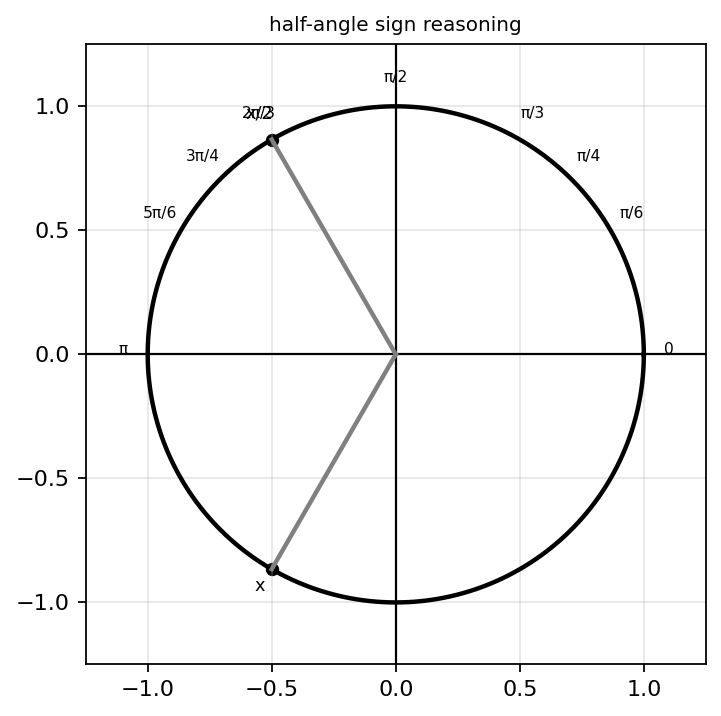
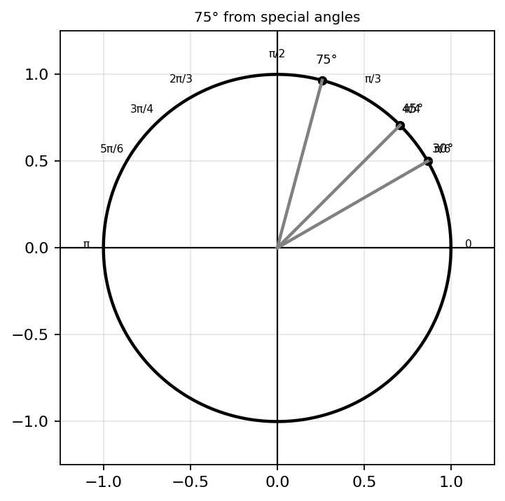
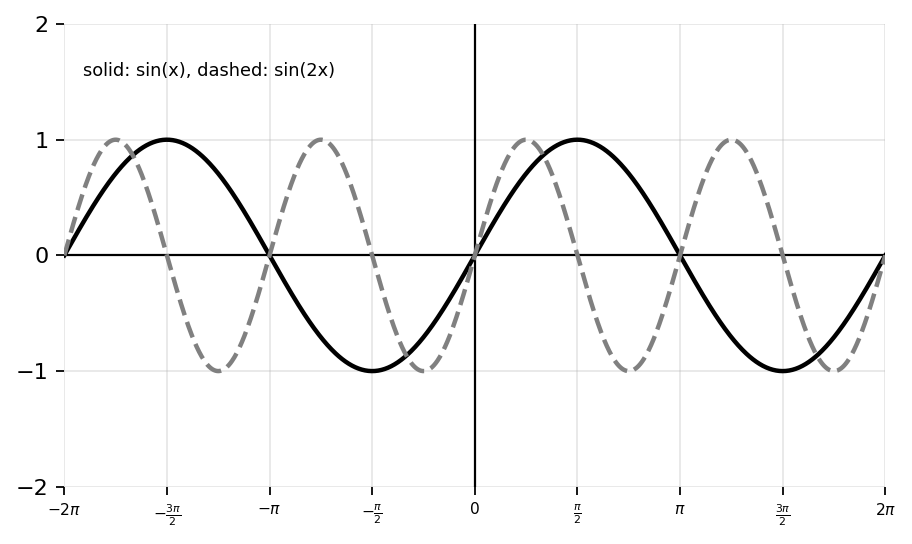
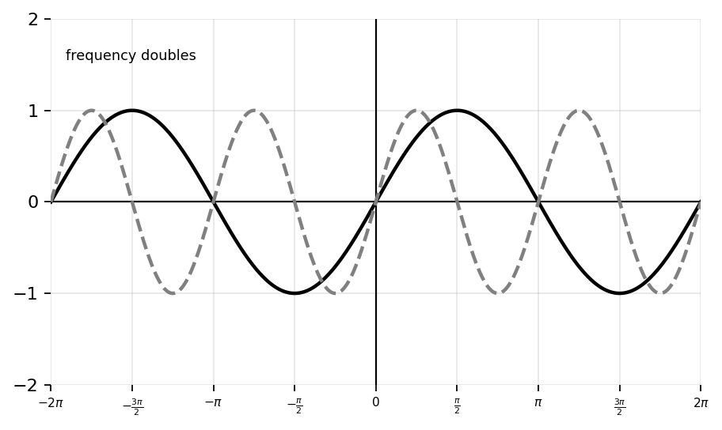
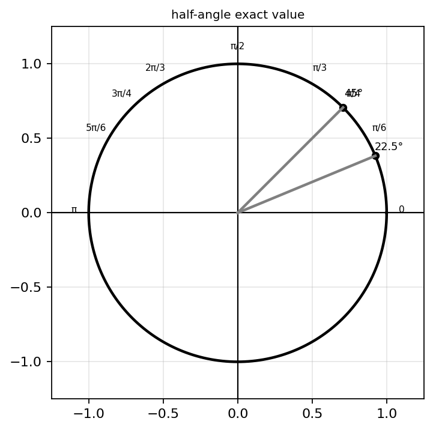
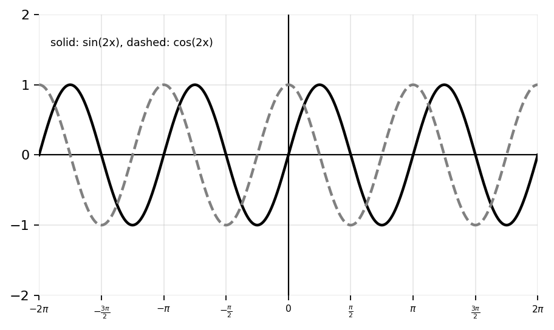
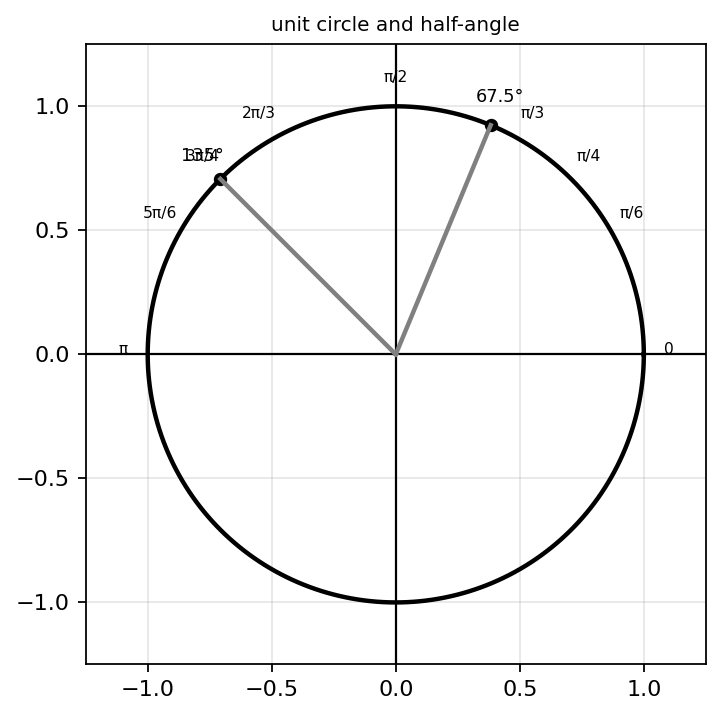

State the double-angle identity for \(\sin(2x)\).
State one double-angle identity for \(\cos(2x)\).
Rewrite \(2\sin(x)\cos(x)\) using a double-angle identity.
Rewrite \(\cos^2(x)-\sin^2(x)\) using a double-angle identity.
Rewrite \(1-2\sin^2(x)\) using a double-angle identity.
Rewrite \(2\cos^2(x)-1\) using a double-angle identity.
State the half-angle identity for \(\sin\left(\frac{x}{2}\right)\).
State the half-angle identity for \(\cos\left(\frac{x}{2}\right)\).
Evaluate exactly: \[\sin(2\cdot45^\circ)\]
Evaluate exactly: \[\cos(2\cdot30^\circ)\]
Evaluate exactly: \[\sin\left(\frac{\pi}{8}\right)\]
Evaluate exactly: \[\cos\left(\frac{\pi}{8}\right)\]
Fill in the blanks.
Rewrite \(4\sin(x)\cos(x)\) as a single trig function.
Rewrite \(8\sin(x)\cos(x)\) using double-angle identities.
Simplify: \[\sin^2(x)-\cos^2(x)\]
Rewrite \(\cos^2(x)\) using a half-angle identity.
Rewrite \(\sin^2(x)\) using a half-angle identity.
Evaluate \(\sin(90^\circ)\) using a double-angle identity.
Evaluate \(\cos(120^\circ)\) using a double-angle identity.
Evaluate exactly: \[\sin\left(\frac{\pi}{12}\right)\]
Evaluate exactly: \[\cos\left(\frac{\pi}{12}\right)\]
Evaluate exactly: \[\tan\left(\frac{\pi}{8}\right)\]
Use a half-angle identity to determine \(\cos(15^\circ)\).
Use a half-angle identity to determine \(\sin(15^\circ)\).
Verify: \[2\sin(x)\cos(x)=\sin(2x)\]
Verify: \[1-2\sin^2(x)=\cos(2x)\]
Rewrite \(\sin^2(x)\cos^2(x)\) using double-angle identities.
Explain geometrically why \(\sin(2x)=2\sin(x)\cos(x)\).
A student claims \(\cos(2x)=\cos^2(x)+\sin^2(x)\).
Verify: \[\frac{1-\cos(2x)}{2}=\sin^2(x)\]
Explain each step.
Verify: \[\frac{1+\cos(2x)}{2}=\cos^2(x)\]
Explain why half-angle identities require \(\pm\) in front of the square root.
Determine \(\sin\left(\frac{x}{2}\right)\) given \(\cos(x)=\frac35\) and \(\pi 
Determine \(\cos\left(\frac{x}{2}\right)\) given \(\sin(x)=-\frac45\) and \(\pi
Use identities to rewrite \(\sin^4(x)-\cos^4(x)\) in a simpler form.
A student says, “Double-angle identities are just shortcuts and do not reveal anything important.” Respond using examples involving graph structure and exact values.
Compare \(\cos(2x)\) written as \(\cos^2(x)-\sin^2(x)\) and as \(1-2\sin^2(x)\). Explain when each form is strategically useful.
Use identities to prove \(\sin(75^\circ)=\frac{\sqrt6+\sqrt2}{4}\).

Use graph behavior to explain how \(\sin(x)\) and \(\sin(2x)\) are related. Discuss period, symmetry, zeros, and amplitude.

Create and solve a verification problem that requires both a double-angle identity and a Pythagorean identity. Your identity must begin with an expression involving \(\sin^2(x)\), \(\cos^2(x)\), and \(\sin(2x)\), and it must simplify to a single trig function. Show every step and explain why each rewrite is valid.
Create a half-angle problem where quadrant reasoning matters. Choose an angle \(x\) such that \(\cos(x)\) is known and \(\frac{x}{2}\) lies in a different quadrant than \(x\). Ask for \(\sin\left(\frac{x}{2}\right)\) or \(\cos\left(\frac{x}{2}\right)\), then solve it fully with exact values and a sign explanation.
Design an error-analysis problem involving \(\cos(2x)\).
Create a problem where \(\sin(2x)\) must be used to simplify a complicated expression. The original expression should include a product \(\sin(x)\cos(x)\). Solve it in two ways: first by using the double-angle identity early, and second by expanding or substituting first. Compare the efficiency.
Design a real-world periodic scenario where doubling the angle changes the frequency of oscillation. Write two models, one using \(\sin(x)\) and one using \(\sin(2x)\), then explain how the graphs differ in period, zeros, and number of cycles over the same interval.

Create a specific challenge problem involving exact trig values, half-angle identities, radicals, and unit-circle reasoning. Use the angle \(\frac{\pi}{8}\) or \(\frac{3\pi}{8}\). Require students to determine both sine and cosine exactly, justify the signs using the unit circle, and simplify the radicals as much as possible.

Create a comparison task involving \(\sin(2x)\) and \(\cos(2x)\). Include a graph, two identities for each function, and prompts asking students to compare zeros, symmetry, period, and which identity form is most useful for solving equations.

Create a multi-representation problem involving unit-circle coordinates, half-angle identities, exact values, and graph behavior. Use an angle such as \(\frac{3\pi}{4}\) and ask students to find exact values for \(\sin\left(\frac{3\pi}{8}\right)\) and \(\cos\left(\frac{3\pi}{8}\right)\), justify signs geometrically, and explain where those values appear on sine and cosine graphs.

A student claims, “Half-angle identities are just memorization.” Critique this statement using one example involving geometry, one involving exact values, one involving graph reasoning, and one involving strategic simplification.
Create a verification problem requiring multiple identities, careful algebra, strategic substitution, and exact-value reasoning. Your problem must use at least one double-angle identity, one half-angle identity, and one known unit-circle value. Then provide a full justification.